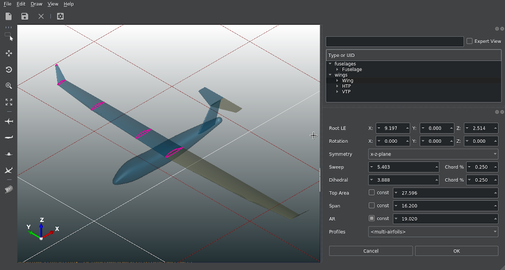
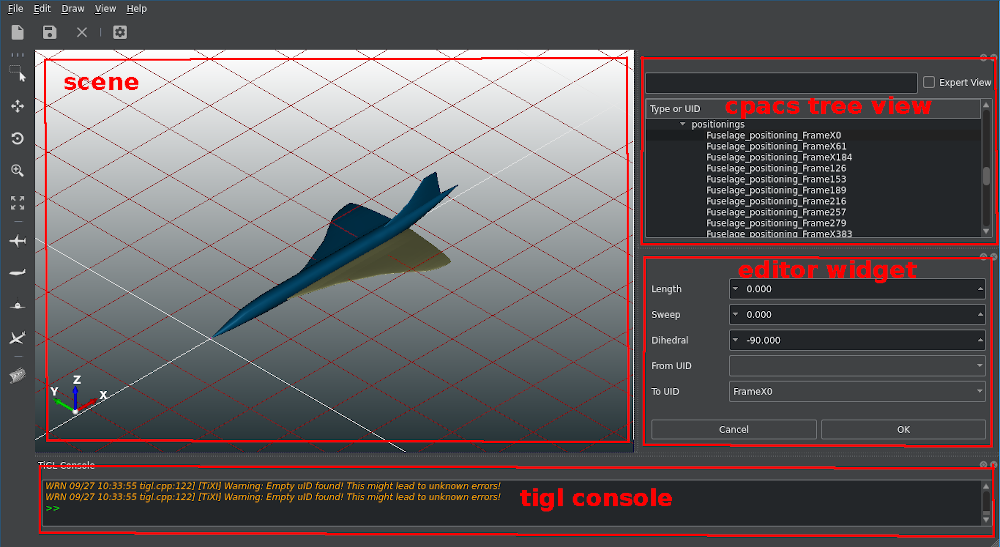
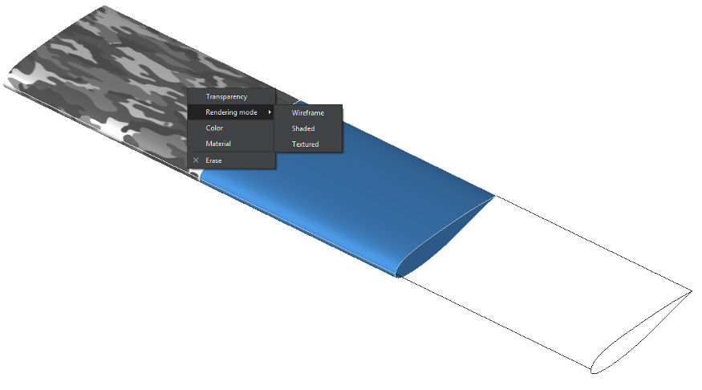
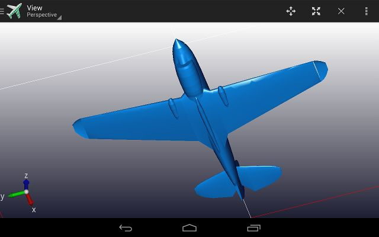

Overview
The CPACSCreator is a 3D viewer and editor for CPACS geometries. CPACSCreator is based on TiGL Viewer. Compare to TiGL Viewer it add the possibility to edit and create CPACS geometries.

The CPACSCreator showing a CPACS model
Features of CPACSCreator
- 3D Visualization CPACS, STEP, IGES, BREP, and STL files
- Creation of screen shots
- Conversion of geometries into standard CAD file formats
- Conversion into mesh formats such as STL, VTK, and COLLADA (for Blender rendering)
- A powerful scripting console that allows automatizing typical workflows, such as creating screen shots
or making some debug plots.
- CPACS specific:
- Display single CPACS entities such as wings, fuselages, profiles and guide curves
- Compute and export a trimmed aircraft configuration
- Compute discrete points on wings/fuselages using TiGL functions
- Edit wing high level parameters see available parameters here
- Edit fuselage high level parameters see available parameters here
- Edit wing section
- Edit fuselage section
- Edit positionings
- Standardization of positionings
- Create a wing
- Create a fuselage
- Undo/Redo operation
Widgets presentation
Here we will briefly present the different widgets that are available in CPACSCreator. Note that each widget can be move around or closed. To close or activate the widgets use the shortcut or go in the display menu (View->Display).

Main widow and widgets of CPACScreator
The scene
The scene display the 3D tigl object. You can chose which object you wnat to draw in Draw menu. Remark that no modification on the object can be performed form the scene. The scene is only a display interface.
The CPACS tree view
The CPACS tree view show the CPACS tree structure. When you click on a element in the tree, the correct editor widget is activated. By default the tree view widget filter the objects to display only the most import objects. You can see all the CPACS objects by click on "Expert view" mode on the top of the tree view widget. You can also filter the tree by some UID or CPACS type be typing in the line next to the "Expert view" checkbox.
The Editor widget
The editor widget displayed the parameters that can be modified for the object selected in the tree view.
The console
A page is dedicated to the console please visit this page for mor information
Navigation in the 3D view
The most often used navigation functions are included in the tool bar
Here, one can use
- "Select shapes" to select some parts ("shapes") of the geometry with the mouse.
- "Pan view" to translate the whole geometry with the mouse
- "Rotate view" to rotate the view point with the mouse
- "Zoom" to zoom in or out with the mouse
- "Fit to view" to fit all objects into the current view
- "Top" to see the top view of the geometry
- "Side" to see the side view of the geometry
- "Front" to see the front view of the geometry
- "Axonometric" to see the axonometric view of the geometry
- "Reflection plot" to visualize C1 and C2 surface discontinuities
More functions can be found in the "View" menu.
Keyboard shortcuts
All actions in the TiGL Viewer can be accessed using the application menu or the context menu inside the 3D view. To improve usability, some the actions can also be executed with keyboard shortcuts. The most practical ones are:
Basic actions
| Keys | Action |
| Ctrl+O | open file |
| Ctrl+S | save file |
| Ctrl+Shift+S | save file as |
| Ctrl+Q | close program |
| Ctrl+N | create a new file from template |
Change view
| Keys | Action |
| 1 | Front view |
| 2 | Back view |
| 3 | Top view |
| 4 | Bottom view |
| 5 | Left view |
| 6 | Right view |
| Ctrl-D | Axonometric view |
| + | Zoom in |
| - | Zoom out |
| Ctrl-W | Toggle display of wireframe |
| Alt-C | Toggle display of console |
| Ctrl-E | Enable zoom mode |
| Ctrl-T | Enable pan view mode |
| Ctrl-R | Enable rotate view mode |
| Ctrl-A | Fits all objects into view |
| Ctrl-G | Toggle display of grid |
GUI Settings
The settings dialog allows some customization of the visualization of objects and the export of meshes. It is opened by clicking on File -> Settings.
Display Settings
- Tesselation accuracy: the accuracy how the mathematical geometries are converted to triangles. The higher this setting is, the more triangles are created. High values typical require more computation time. Default: 5.
- Triangulation accuracy: similar to tesselation accuracy, but only used for export of triangular meshes (VTK, COLLADA, STL). Default: 5.
- Background color: base color of the 3D viewer's background gradient.
Debugging
- Enumerate faces: If enabled, a number will be displayed next to each face in the viewer. This helps to understand the order of face creation. Mostly useful for TiGL developers. Default: off
- Debug boolean operations: Boolean operations tend to be quite unstable due to the problems in the OpenCASCADE kernel. To improve the debugging of such operations, TiGL Viewer can export intermediate geometries as BREP files to disk. These files can again be displayed in the TiGL Viewer. In case of an error, these files should be send to the TiGL developers. The files are placed inside the current working directory. Default: off
Graphics Customization
The rendering off all geometrical objects can be be customized to some extends. In order modify some rendered objects, select the objects of interest and press the right mouse button inside the 3D view. The following actions are available:
- Setting the material (which affects the shading behavior)
- Setting the object color and transparency
- Toggle between wireframe and shading rendering

Different shading settings (textured, plastic blue, wireframe)
Mobile platforms
A simplified version of the TiGL Viewer is also available for mobile devices based on Android. It can be downloaded from the Google play store.

The TiGL Viewer App for Android